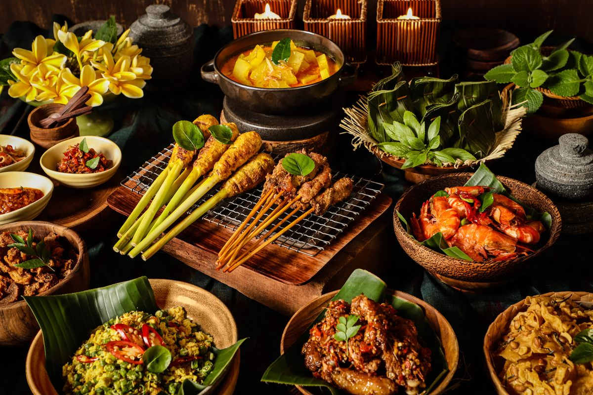

Menjelajahi Rasa Melalui Kuliner Indonesia
Indonesia dikenal dengan kekayaan kuliner yang begitu beragam, dan setiap daerah memiliki ciri khasnya masing-masing. Keanekaragaman ini berasal dari penggunaan rempah-rempah yang berbeda, kebiasaan masyarakat, serta sejarah budaya yang memengaruhi cara memasak. Banyak makanan yang tidak hanya menjadi hidangan, tetapi juga simbol tradisi yang diwariskan secara turun-temurun. Misalnya, Rendang dari Sumatera Barat yang hingga kini menjadi salah satu makanan terenak di dunia. Proses memasaknya yang memakan waktu lama menunjukkan kesabaran dan ketelitian masyarakat Minang dalam meracik makanan. Rendang tidak hanya menjadi hidangan sehari-hari, tetapi juga disajikan dalam berbagai perayaan adat penting.
Selain Rendang, kuliner Indonesia juga sangat kaya dengan makanan berkuah seperti Rawon dari Jawa Timur yang terkenal dengan kuah hitamnya, soto dari berbagai daerah yang memiliki cita rasa berbeda, serta makanan ringan seperti Pempek Palembang dengan kuah cuko yang khas. Sementara itu, dari daerah Jawa terdapat Gudeg Yogyakarta yang memiliki rasa manis dan tekstur yang lembut, mencerminkan karakter masyarakat Yogyakarta yang halus dan ramah. Setiap makanan mencerminkan budaya masyarakatnya—baik dari tingkat kepedasan, penggunaan bahan, hingga cara penyajiannya. Dengan mencoba kuliner dari berbagai daerah, seseorang bisa belajar banyak tentang budaya dan sejarah di baliknya.